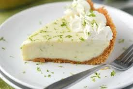

Ingredientes:
- 1 paquete de galletas María trituradas
- ½ taza de mantequilla derretida
- 1 lata de leche condensada
- ½ taza de jugo de limón
- 1 taza de crema para batir
- Ralladura de limón para decorar
Preparación:
- Mezcla las galletas trituradas con la mantequilla y presiona en un molde.
- En otro recipiente, mezcla la leche condensada con el jugo de limón.
- Vierte la mezcla sobre la base de galleta.
- Refrigera por al menos 4 horas.
- Decora con crema batida y ralladura de limón.
- Sirve frío y disfruta tu pay de limón. 🍋